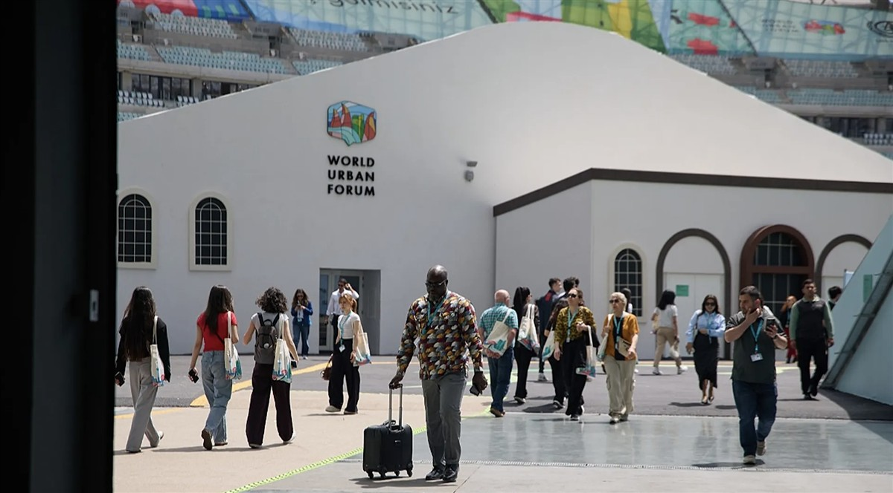

ON SOURCE: SDG KNOWLEDGE HUB
World Urban Forum Tackles Global Housing Crisis
STORY HIGHLIGHTS
The Forum culminated in the Baku Call to Action – a set of 15 outcomes that will inform mid-term review of the New Urban Agenda in July 2026.
NUA’s mid-term review coincides with in-depth review of SDG 11 (sustainable cities and communities) at the July session of HLPF 2026.
The 13th session of the World Urban Forum (WUF13) took stock of global efforts to steer urban development towards inclusive, sustainable, and resilient cities in the face of increasing climate change impacts, conflicts, and urbanization. With nearly three billion people worldwide living in inadequate housing, participants reflected on ways to address the housing crisis. They also prepared for the upcoming mid-term review of the New Urban Agenda (NUA) in July 2026.
NUA’s mid-term review coincides with in-depth review of SDG 11 (sustainable cities and communities) at the July session of the 2026 UN High-level Political Forum on Sustainable Development (HLPF).
According to the Earth Negotiations Bulletin (ENB)summary report of the meeting, NUA’s review will assess challenges encountered and progress made across its three transformative commitments: sustainable urban development for social inclusion and ending poverty; sustainable and inclusive urban prosperity and opportunities for all; and environmentally sustainable and resilient urban development.
The Forum culminated in the Baku Call to Action – a set of 15 outcomes that will inform NUA’s mid-term review. On recognizing underlying rights and drivers, the document calls for:
- The full adoption and enforcement of a human rights approach to housing;
- Integrated housing approaches that link humanitarian response, recovery, and long-term development with advancing climate-resilient and people-centered urban recovery in fragile and post-conflict settings;
- Intergenerational and intersectional approaches to housing that place people at the center of policy and delivery;
- Housing systems that strengthen climate resilience, preserve biodiversity, and mitigate harmful impacts through nature-based, community-led, and locally grounded solutions; and
- Strengthening people-led localized, Indigenous, and traditional practices.
On responding to direct manifestations of the housing crisis, the document calls for:
- An integrated and participatory spatial planning approach, with a gender lens;
- Sustained measures to improve affordability;
- Housing approaches that recognize gender, diversity, and sexual orientation and promote accessibility, proximity, safety, well-being, and social inclusion; and
- Stronger protections against forced evictions and displacement.
On transforming housing systems, the document calls for:
- A diverse and locally grounded approach;
- Stronger public and local stewardship of land systems;
- Reimagining housing finance value chains to prioritize inclusion and scale;
- Integrated and systems-based planning approaches that embed housing within broader territorial and urban frameworks;
- Implementation of national housing strategies, with clear pathways, measurable targets, and strong monitoring and reporting mechanisms; and
- A strong commitment to an evidence-based approach that combines local and community-led data with scientific and academic knowledge.
Organized in collaboration with UN-Habitat, the Government of Azerbaijan, and other stakeholders WUF13 convened in Baku, Azerbaijan, from 17-22 May 2026. The Forum included a high-level ministerial meeting, WUF Stakeholder Assemblies, and, for the first time, a Leader’s Summit, bringing together 27 Heads of State and other high-level representatives. Official discussions took place in dialogues, special sessions, and roundtables. Partner-led events convened in session streams on Voices from Cities, WUF Academy, and One UN events. An exhibition space featured the Urban Expo, an Urban Library, and Urban Cinema. [ENB Coverage of WUF13]
SDGs
-
Goal 1 - No Poverty
-
Goal 5 – Gender Equality
-
Goal 9 - Industry, Innovation & Infrastructure
-
Goal 10 - Reduced Inequalities
-
Goal 11 - Sustainable Cities & Communities
Issues
-
Adaptation,
-
Biodiversity,
-
Land Tenure and Property Rights,
-
Climate Change,
-
Economics & Investment,
-
Gender,
-
Governance,
-
Human Rights & Indigenous Peoples,
-
Human Settlements & Population,
-
Land,
-
Monitoring & Evaluation,
-
Poverty Eradication,
-
Sustainable Development
Global Partnerships
-
Data, Monitoring & Accountability,
-
Systemic Issues,
-
Policy & Institutional Coherence
Actors
-
National Government,
-
Stakeholders and Major Groups,
-
UN Programme, Agency or Fund,
-
UN-HABITAT
Actions
- Meeting
Regions
-
Asia,
-
Europe,
-
Western Asia
ON SOURCE: SDG KNOWLEDGE HUB
